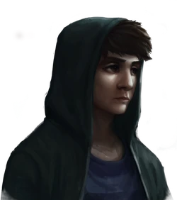
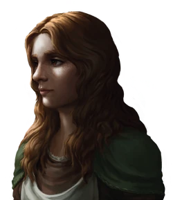
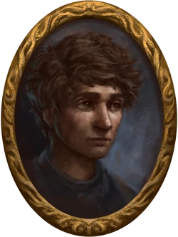
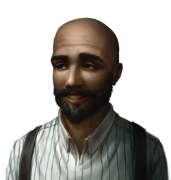
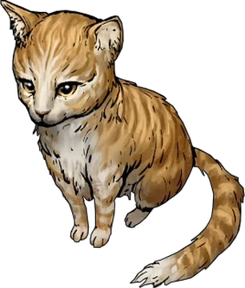

Amelie Florence é uma das protagonistas da série Ordem Paranormal, presente em O Segredo na Ilha. Ela é uma universitária, filha de Angelina e Montel Florence e irmã mais velha de Olivier Florence. Amelie, junto de sua família, viajou para a Ilha de Tipora devido ao trabalho de seu pai, que foi contratado para avaliar as obras de um pintor desaparecido que vivia na mansão onde os Florence ficariam.

Olivier Florence
Olivier Florence é um dos protagonistas da série Ordem Paranormal, presente em O Segredo na Ilha.
Ele é um universitário, filho de Angelina e Montel Florence e irmão mais novo de Amelie Florence. Olivier, junto de sua família, viajou para a Ilha de Tipora devido ao trabalho de seu pai, que foi contratado para avaliar as obras de um pintor desaparecido que vivia na mansão onde os Florence ficariam.

Barbára Lima
Bárbara Lima foi uma das protagonistas de O Segredo na Ilha.
Ela foi uma residente da Ilha de Tipora, uma ilha que fica a 250 quilômetros da costa do estado de Espírito Santo. Bárbara era a jardineira do vilarejo, e morava em uma casa no mesmo terreno da Mansão. Com a chegada da família Florence à ilha, Bárbara e Milo, seu amigo de infância, veem uma oportunidade de quebrar sua rotina.

Milo
Milo Castello, cujo nome original é Miguel, foi um dos protagonistas de O Segredo na Ilha.
Ele foi um residente da Ilha de Tipora. Mora em uma casa próxima à praia e era um dos pescadores da ilha, seguindo os passos de seu pai, Bartô. Com a chegada da família Florence à ilha, Milo e Bárbara vêem uma oportunidade de quebrar sua rotina e, junto de Amelie, decidem desvendar os segredos da ilha.

Wanderley
Wanderley Nascimento, foi um dos protagonistas de O Segredo na Ilha.
Ele foi um agente da Ordo Realitas, que junto de Cavalcante, se dirigiu à ilha de Tipora, disfarçados como agentes imobiliários. Chegou em Tipora pelo barco de Adrian Vurtoren e logo em seguida indo para a Mansão dos Moretti.

Bisteca
Bisteca é o gatinho e animal comunitário da Ilha de Tipora, sendo visto constantemente brincando com os moradores do vilarejo, principalmente com Amora Aleno e Ian Suna.